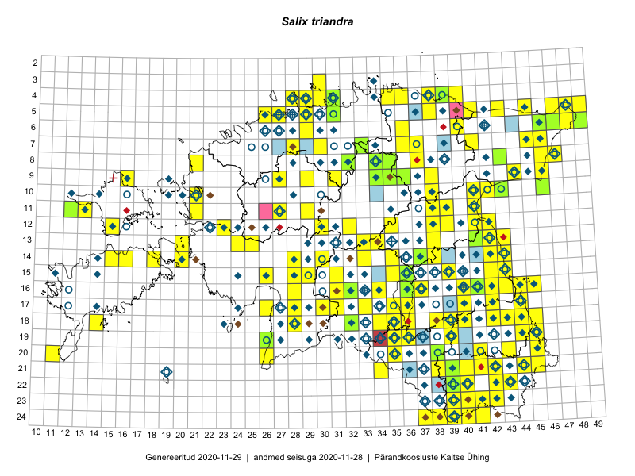

Salix triandra
Uuendatud: 2016-12-02
Kaardile koondatud taksonid: Salix triandra L.

Kaart põhineb 147 kirjel, neist vaatlusi 146 ja eksemplare 1. Taksonit on leitud 127 ruudust.
Kuvatud viited 20 esimesele andmebaasikirjele, ülejäänud PlutoFis
- Malle Leht: 2015-07-09: : ala
- Peedu Saar, Toomas Kukk: 2015-05-27: 09-16: ala
- Tiit Hallikma, Toomas Kukk: 2015-07-21: 05-45: ala
- Peedu Saar: 2015-07-04: 18-45: ala
- Peedu Saar: 2015-07-04: 18-44: ala
- Peedu Saar: 2015-07-15: 15-39: ala
- Tiit Hallikma, Toomas Kukk: 2015-07-22: 05-49: ala
- Peedu Saar, Eerik Leibak: 2015-07-30: 15-42: ala
- Peedu Saar, Eerik Leibak: 2015-07-30: 16-41: ala
- Toomas Kukk, Kersti Tambets, Sten Mander, Janika Sammasto, Timo Luhamäe: 2014-07-29: 18-45: ala
- Peedu Saar, Liina Oja: 2015-06-10: 14-30: ala
- Toomas Kukk, Eerik Leibak: 2015-07-29: 16-45: ala
- Toomas Kukk, Eerik Leibak: 2015-07-29: 16-44: ala
- Toomas Kukk, Tiit Hallikma: 2015-06-10: 15-31: ala
- Toomas Kukk, Tiit Hallikma: 2015-06-12: 12-35: ala
- Toomas Kukk, Tiit Hallikma: 2015-06-01: 07-45: ala
- Toomas Kukk: 2014-06-18: 18-14: ala
- Peedu Saar, Eerik Leibak: 2015-08-16: 12-39: ala
- Tiit Hallikma, Toomas Kukk: 2015-07-23: 07-41: ala
- Tiit Hallikma, Toomas Kukk, Meeli Mesipuu: 2015-05-31: 07-46: ala